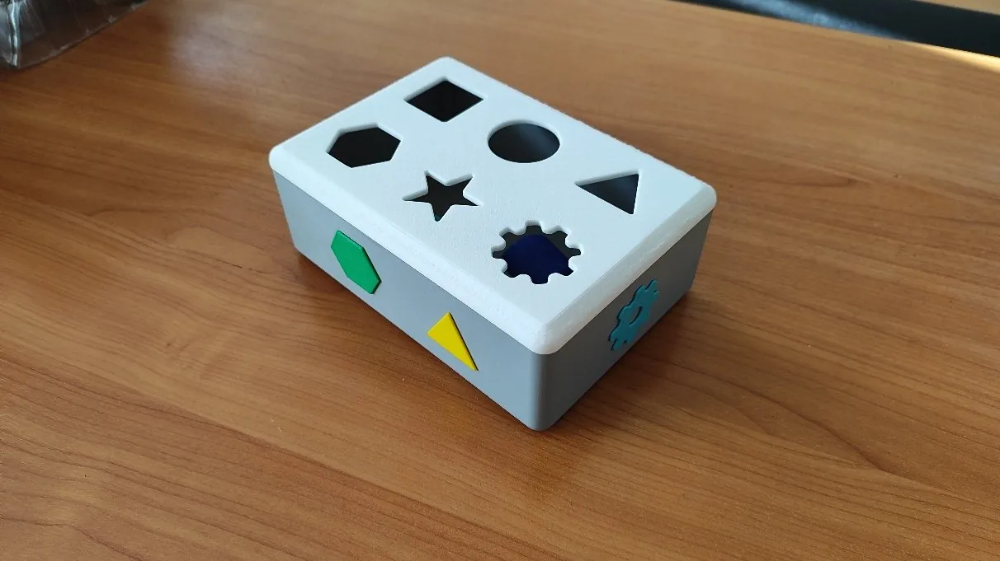
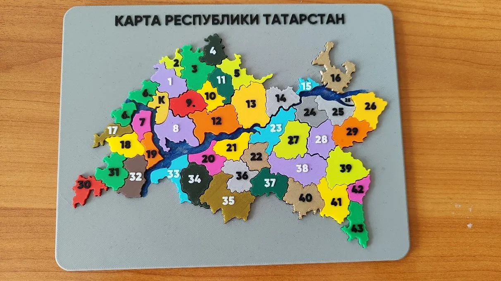
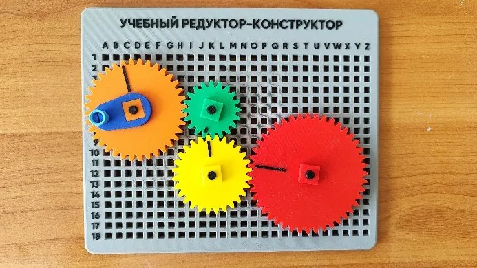
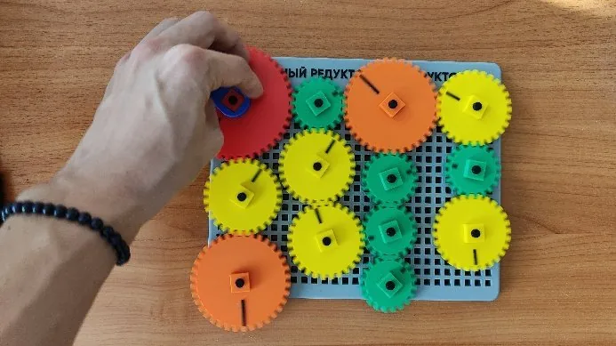

01 / 03
ФОРМА И ЛОГИКА
Геометрический
сортировщик
Набор с шестью объёмными фигурами и соответствующими отверстиями. Помогает исследовать формы и сопоставлять элементы.
6 геометрических фигурПроектируем и изготавливаем развивающие игрушки: от первой линии в 3D-модели до яркой детали в руках.


«Кузница 3D-Игрушек» — стартап-проект по созданию экосистемы для проектирования, персонализации и аддитивного производства настраиваемых образовательных игрушек.
Мы соединяем цифровое моделирование и послойное изготовление деталей, чтобы создавать игровые наборы с понятной механикой, интересной геометрией и возможностью адаптации конструкции.
Три изделия, разработанные и изготовленные в рамках пробной партии проекта.
ФОРМА И ЛОГИКА
Набор с шестью объёмными фигурами и соответствующими отверстиями. Помогает исследовать формы и сопоставлять элементы.
6 геометрических фигурГЕОГРАФИЯ ЧЕРЕЗ ИГРУ
Разборная карта с элементами районов и Казани. В комплект входят схема сборки и расшифровка обозначений.
Сборка территорий
ПЕРВЫЕ ШАГИ В МЕХАНИКЕ
Переставные оси, зубчатые колёса и съёмная ручка позволяют собирать разные схемы передачи вращения.
Сборные зубчатые передачиПоследовательность работы, применённая при создании пробной партии игрушек.
Разрабатываем геометрию деталей и сборки в КОМПАС-3D.
Выбираем ориентацию, высоту слоя, заполнение и другие параметры в Bambu Studio.
Изготавливаем детали методом послойного наплавления термопластичного материала.
Собираем игрушки, проверяем посадки и при необходимости дорабатываем детали.

От цифровой модели до реального механизма, который можно собрать своими руками.
Проект «Кузница 3D-Игрушек», № 107789, реализуется в рамках программы «Студенческий стартап».
ИНФОРМАЦИЯ О ГОСУДАРСТВЕННОЙ ПОДДЕРЖКЕ
Проект реализован при поддержке Фонда содействия инновациям в рамках программы «Студенческий стартап» мероприятия «Платформа университетского технологического предпринимательства» федерального проекта «Технологии»
Официальная символика участников программы представлена на главной странице проекта.
«Кузница 3D-Игрушек» — проект на пересечении дизайна, инженерии и образовательных технологий.
Вернуться наверх